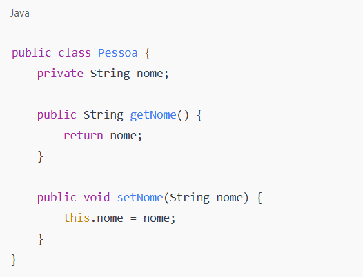
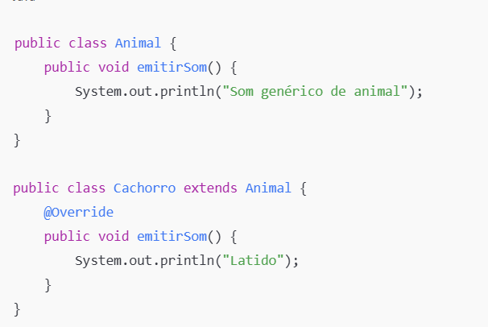

Comparação entre Programação Orientada a Objetos (POO) e Programação Funcional (POF)

1. O Que é Programação Orientada a Objetos (POO)?
A POO organiza o código em torno de objetos, encapsulando dados e comportamento relacionados.
2. O Que é Programação Orientada a Funções (POF)?
A POF organiza o código em torno de funções puras, evitando estados mutáveis.
3. Diferenças Fundamentais
A tabela abaixo resume as diferenças:
| Aspecto | POO (Java) | POF (Node.js) |
|---|---|---|
| Foco | Objetos e suas interações | Funções puras e imutabilidade |
| Estado | Mutável | Imutável |
| Composição | Herança ou interfaces | Funções combinadas |
4. Relevância e Aplicabilidade
- POO: Usada em sistemas empresariais, aplicativos móveis e jogos.
- POF: Preferida para APIs escaláveis, serviços em tempo real e processamento de dados.
5. Conclusão
Ambos os paradigmas são importantes. Escolher entre POO e POF depende do tipo de aplicação e dos desafios do projeto.